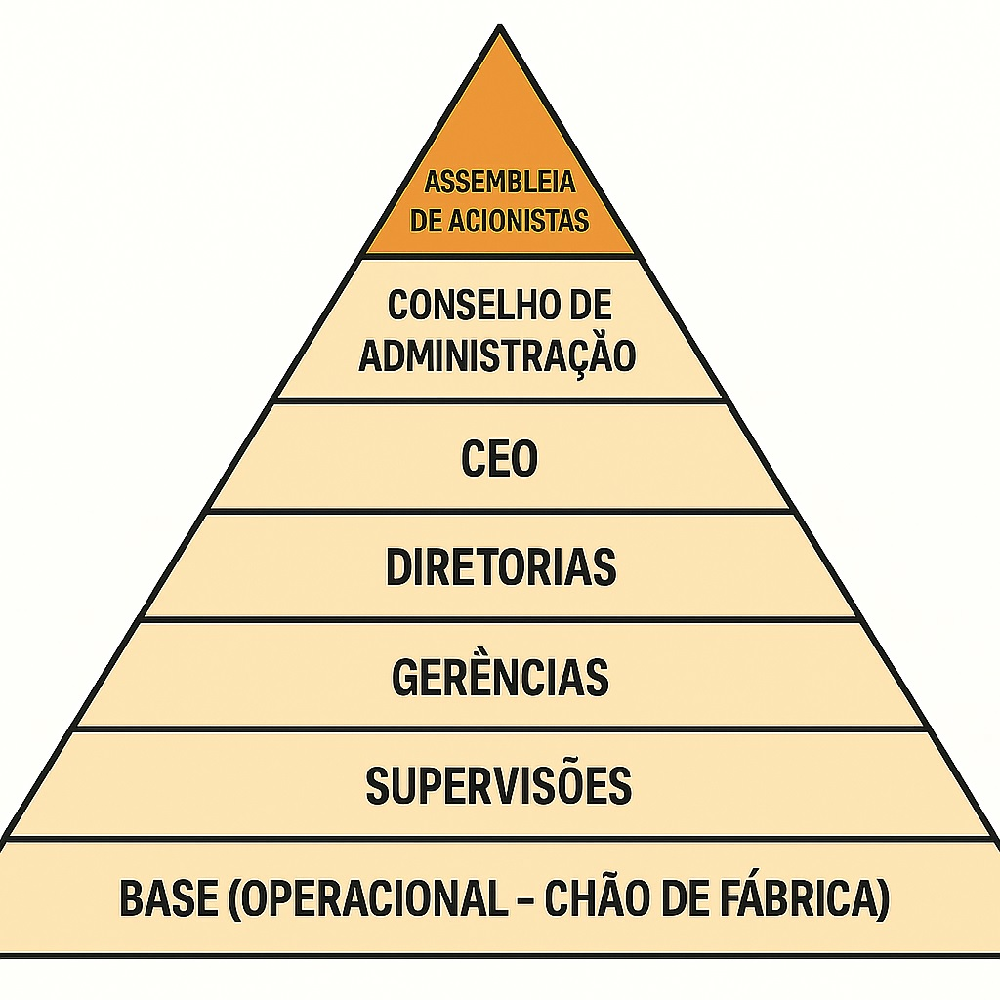
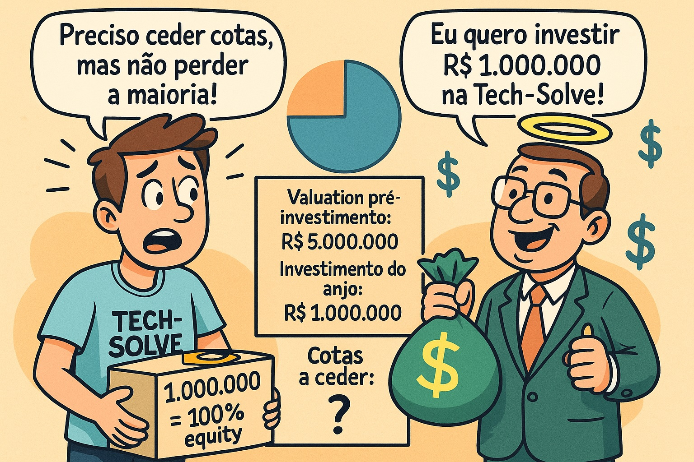
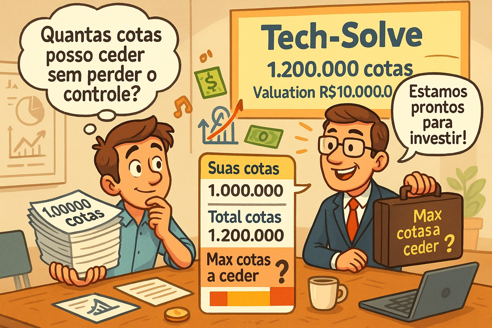
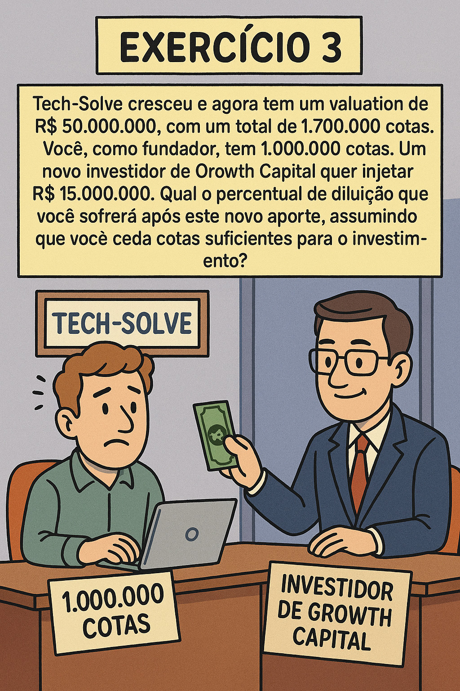
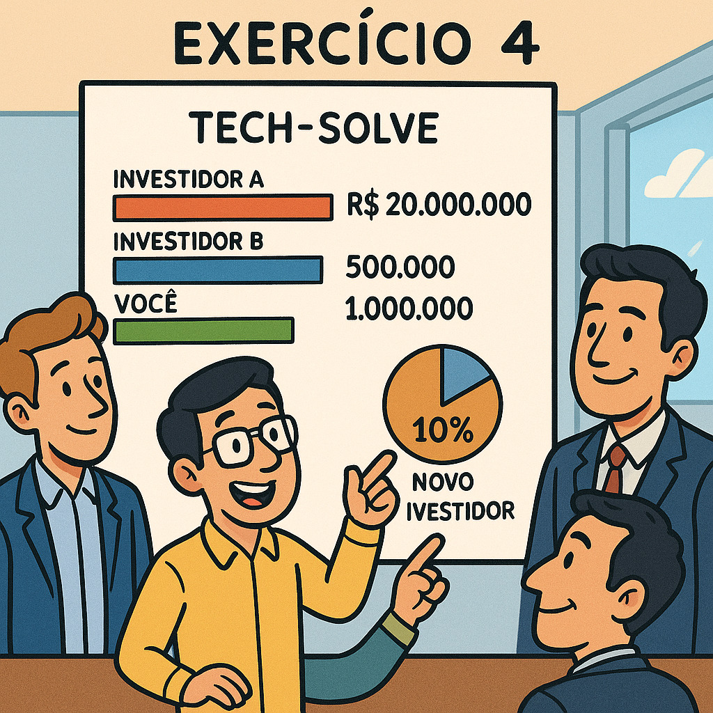
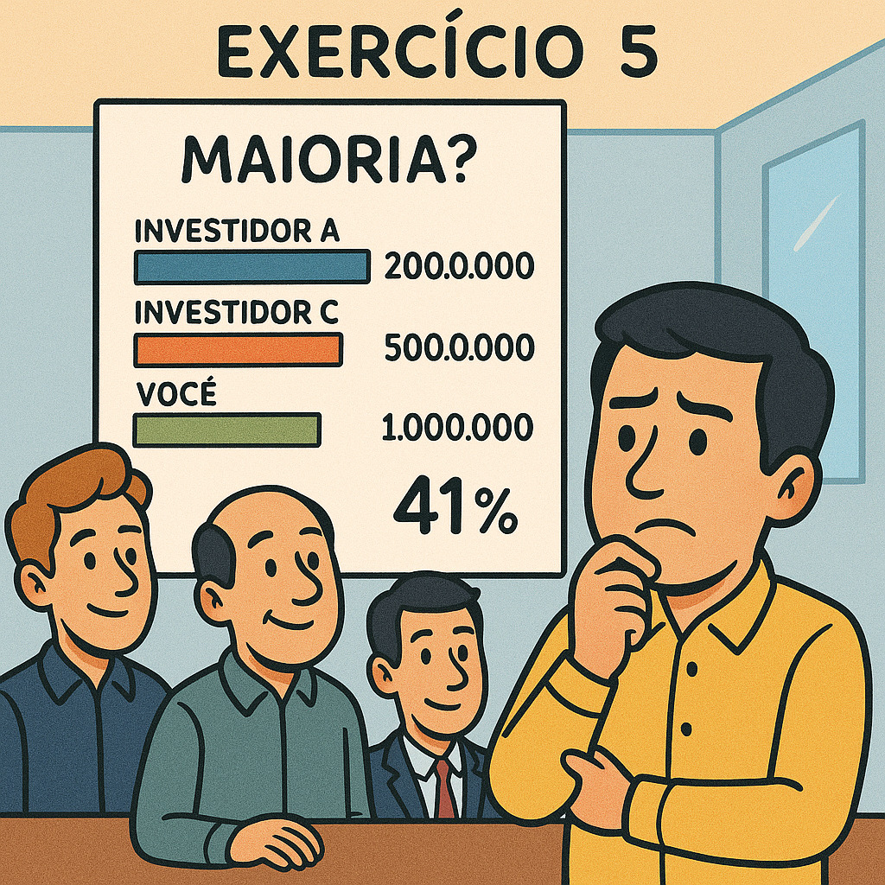

Capítulo 3 Governança Corporativa - Assembléia dos Proprietários
3.1 A Assembleia Geral

É definida como a reunião de acionistas ou cotistas.
É considerada o órgão soberano da organização.
3.2 Principais Competências da Assembleia Geral
As competências destacadas da Assembleia Geral incluem:
Aumentar ou reduzir o capital social e reformar o estatuto/contrato social.
Eleger ou destituir, a qualquer tempo, conselheiros de administração e fiscais.
Tomar, anualmente, as contas dos administradores e deliberar sobre as demonstrações financeiras.
Deliberar sobre transformação, fusão, incorporação, cisão, dissolução e liquidação da sociedade.
Deliberar sobre a avaliação de bens que venham a integralizar o capital social.
Aprovar a remuneração dos administradores.
3.3 Frequência e Modalidade das Assembleias
A Assembleia Geral pode ser de dois tipos, elecandos abaixo:
3.4 Participação Patromonial na empresa (Equity)
3.4.0.1 Como calcular EQUITY após uma rodada de investimentos
Como um acionista pode calcular sua participação na empresa após uma rodada de investimentos ?
Basicamente, podemos fazer-lo aplicado a fórmula:
3.5 Equity - caso FACEBOOK
https://www.youtube.com/watch?v=YR4eE9TVq44&t=194s

| Data (Estim) | Evento Chave | Equity Saverin(Estim) | Contexto e Ação |
|---|---|---|---|
| Fevereiro de 2004 | Fundação do Facebook | 30% a 34% | Eduardo Saverin investe US$ 15 mil para ajudar a fundar a empresa. Sua participação é a maior entre os sócios, atrás apenas de Mark Zuckerberg. |
| Metade de 2004 | Mudança para Palo Alto | < 30% | Desentendimentos entre Zuckerberg e Saverin. Zuckerberg começa a buscar novos investidores e a estruturar a empresa legalmente para uma nova rodada de investimento. |
| Junho de 2004 | Aporte de Peter Thiel | ~20% a 25% | Peter Thiel e Reid Hoffman (investidores-anjo) injetam US$ 500 mil no Facebook. Esta é a primeira rodada de investimento que causa a diluição da participação dos fundadores. |
| Final de 2004 | Reestruturação e Exclusão | < 10% | Zuckerberg cria uma nova entidade legal (“Thefacebook, Inc.”), emite novas ações e, de forma controversa, dilui a participação de Saverin a uma porcentagem mínima sem seu consentimento. |
| Maio de 2005 | Rodada de Série A | ~10% | A Accel Partners e o co-fundador da PayPal investem US$ 12,7 milhões na empresa. Ações adicionais são emitidas, diluindo ainda mais todos os fundadores, incluindo Saverin. |
| Setembro de 2005 | Processo Judicial de Saverin | ~10% | Saverin processa Zuckerberg e o Facebook, alegando que foi diluído de forma ilegal e quebra de contrato. |
| 2006 | Rodada de Série B | < 10% | Accel Partners, Greylock Partners e outros investem US$ 27,5 milhões. A diluição continua. |
| 2007 | Rodada da Microsoft | < 5% | A Microsoft investe US$ 240 milhões, avaliando o Facebook em US$ 15 bilhões. A emissão de novas ações dilui drasticamente a participação de todos os sócios. |
| 2008 | Acordo com Saverin | ~4% | Saverin e Zuckerberg chegam a um acordo extrajudicial. Os termos exatos não são revelados, mas é noticiado que Saverin recebe uma quantia em dinheiro, suas ações são restauradas, e ele é readmitido como cofundador. |
| Maio de 2012 | IPO do Facebook | ~2% | No momento da Oferta Pública Inicial (IPO), a participação de Saverin é amplamente divulgada como estando em torno de 2%. O valor de sua fatia é estimado em cerca de US$ 4 bilhões. |
3.7 Exercício Resolvido 1
(Etapa 2 de Investimento: tipo Seed Capital -> Investidor “Anjo”)

EXEMPLO 1 - Você é o único fundador da startup “Tech-Solve” e possui 1.000.000 (um mihão) de cotas da empresa, que representam 100% do EQUITY. Um investidor anjo (seed capital) se interessa em investir. O valuation (valor da empresa antes do investimento) é de R$ 5.000.000,00 . O investidor quer injetar um capital de R$ 1.000.000 na empresa. Descubra:
Para não perder a maioria, qual o número máximo de cotas você pode ceder a ele, considerando que cada cota tem um valor unitário? |
3.7.1 Resolução do Exercício I:
3.7.1.1 Item I - Com quantas cotas o fundador original ficou após o aporte (investimento) de R$ 1.000.000,00 (um milhão de reiais) ?
| Sócio em Análise | COTAS ANTES | INVESTIMENTO | COTAS DEPOIS |
|---|---|---|---|
Sócio original (Sócio-Fundador) |
1.000.000 | N/A | 1.000.000 |
Sócio atual (Investidor-Anjo) |
0 | R$ 1.000.000,00 | (ainda não sabemos) - calcular depois |
3.7.1.4 RESPOSTA ITEM II : “O primeiro sócio ficou com 83,33% de participação e o novo sócio (investidor) ficou com 16,66% de participação”.
3.7.1.5 Item III - Quantas cotas receberá o investidor ( então novo sócio da Tech-Solve) após o seu investimento ?
\[ \text{ } \\ \text{ TOTAL\_COTAS\_APOS\_INVESTIMENTO } = \frac{ ( TOTAL\_COTAS\_ORIGINAIS )}{(100\% - PARTICIPACAO\_NOVO\_INVESTIDOR\%)} \text{ } \\ \text{TOTAL\_COTAS\_ORIGINAIS} \Rightarrow \quad \textbf{1.000.000} \quad \text{ (um milhão de cotas) } \text{ } \\ \text{PARTICIPACAO\_NOVO\_INVESTIDOR } \quad \Rightarrow \quad \textbf{16,67\%} \text{ } \\ \text{TOTAL\_COTAS\_APOS\_INVESTIMENTO} = \frac{1.000.000}{ (100\% - 16,67\%} \text{ } \\ \text{TOTAL\_COTAS\_APOS\_INVESTIMENTO} = \frac{1.000.000}{ 1 - 0,1667} \text{ } \\ \text{TOTAL\_COTAS\_APOS\_INVESTIMENTO} = \frac{1.000.000}{ 0,83} \text{ } \\ \text{TOTAL\_COTAS\_APOS\_INVESTIMENTO} = \text{1.200.000 quotas} \text{ } \\ \text{ Sabendo que a quantidade de cotas totais é de 1.200.000 (um milhão e duzentas cotas) e } \\ \text{ } \\ \text{ a participação do novo investidor é de 16,66\% } \\ \text{ } \\ \text{ vamos usar a REGRA DE 3 para descobrir a quantidade cotas dele } \\ \text{ } \\ \qquad\frac{ 1.200.000 }{ x}= \frac{ 100 \% }{16,6666\%} \qquad \Rightarrow \qquad \frac{ [ ( x ) \times (100) ] }{ [ (16,6666 \%) \times (1.200.000) ] } \\ 100*x = (16,6666 ) \times (1.200.000) \\ 100*x = (16,6666 ) \times (1.200.000) \\ \text{ } \\ x=\frac{ [(1.200.000) \times (16,6666)] }{100} \\ \text{ } \\ x= \frac{19.999.999,92}{100} \\ x= 199.999,99 \\ \text{ arredonda para} \quad \text{ x= 200.000 cotas } \\ \text{ } \\ x= 200.000 \text{ O novo sócio, agora um sócio-investidor, possui } \quad \textbf{ 200.000 } \quad \text{cotas da empresa} \\ \text{ } \]
3.7.1.6 RESPOSTA ITEM III : “O novo sócio (investidor) recebeu 200.000 (duzentas mil) cotas da empresa.”
3.7.1.7 Item IV - Qual o valor máximo que um investidor poderia aportar (colocar na empresa), sem que o dono original perca a majoridade ?
\[ \text{ O INVESTIDOR ORIGINAL SÓ PERDE A MAJORIDADE SE FICAR COM MENOS DE 51\% DO CAPITAL SOCIAL} \\ \text{ } \\ \text{ COMO VIMOS NO EXERCÍCIO, ELE POSSUI 5 MILHÕES DE PARTICIPAÇÃO NO CAPITAL SOCIAL } \\ \text{ } \\ \text{ APÓS O NOVO SÓCIO TER INVESTIDO 1 MILHÃO, A EMPRESA PASSOU A TER 6 MILHÕES DE CAPITAL SOCIAL } \\ \text{ } \\ \text{ SENDO QUE DESTES 6 MILHÕES, 5 MILHÕES SÃO DO ANTIGO DONO (5 MILHÕES REPRESENTAM 83,33\% DO VALOR TOTAL) } \\ \text{ } \\ \text{ A PERGUNTA AGORA SERIA: "QUAL VALOR TOTAL ONDE 5 MILHÕES REPRESENTAM 51\% DELE") } \\ \text{ } \\ \text{ VAMOS UTILIZAR NOVAMENTE A REGRA DE 3} \\ \text{ } \\ \qquad\frac{ x }{ 5.000.000 }= \frac{ 100 \% }{51 \%} \qquad \Rightarrow \qquad \frac{ [ ( x ) \times (51) ] }{ [ ( 5.000.000 ) \times (100) ] } \\ 51*x = (5.000.000 ) \times (100) \\ 51*x = (500.000.000) \\ \text{ } \\ x=\frac{ 500.000.000 }{51} \\ \text{ } \\ x= 9.803.921,5687 \\ \text{ R\$ 9.803.921,5687 é o valor total de dinheiro em caixa onde R\$ 5.000.000,00 representam 51% deste valor } \\ \text{ } \\ \text{ Assim, sabendo que já tinhamos R\$ 5.000.000,00 em caixa, se o investidor investisse mais 4.803.921,5687 } \\ \text{ o total em caixa chegava a R\$ 9.803.921,5687 DE CAPITAL SOCIAL , quantidade máxima de capital social total para que os 5 milhões do antigo dono } \\ \text{ representassem 51\% da participação na sociedade. } \\ \text{ Um investidor pode investir no máximo } \textbf{R\$ 4.803.921,56 } \text{ para que o antigo dono ainda seja mandatário na empresa } \\ \text{ } \\ \]
3.7.1.8 RESPOSTA ITEM IV : “o novo sócio poderia investir no máximo R$ 4.803.921,56” para que o antigo sócio ainda continuasse mandatário da empresa.
Você pode continuar a praticar com os próximos exercícios se quiser! Eles vão aprofundar a sua compreensão sobre como a diluição e o controle de propriedade funcionam ao longo do tempo.
3.8 Exercícios
3.8.2 (Investimento do tipo Venture Capital -> Investidor “profissional” )

| Exercício 2 - Após o aporte inicial, sua startup “Tech-Solve” tem agora 1.200.000 cotas e um Capital Social (valuation) de R$ 10.000.000. Você ainda detém 1.000.000 de cotas. Um fundo de Venture Capital se propõe a investir R$ 3.000.000. Para que você mantenha o controle majoritário da empresa (mais de 51% ou mais das cotas após o aporte), qual o número máximo de cotas que você pode ceder neste novo round? |
|
|
|
|
|
3.8.3 Resolução do Exercício II:
A empresa valorizou gerando valor por faturamento. Antes, eu e meu sócio-investidor tinhamos em caixa R$ 6 milhões de CAPITAL SOCIAL.
Agora, após faturamento de produção e crescimento orgânico, o CAPITAL SOCIAL da empresa aumentou de R$ 6 milhões para R$ 10 milhões.
De toda forma, segundo o enunciado do exercício, eu continuo tendo 1.000.000 de cotas (83,333% de participação no CAPITAL SOCIAL), enquanto que o outro sócio (sócio-investidor do exercício anterior) continua tendo 200.000 cotas (que representam os mesmos 16,67% do capital social).
Como o CAPITAL SOCIAL aumentou de R$ 6 milhões (total do exercício anterior) para R$ 10 milhões agora, preciso saber quanto destes R$ 10 mihões são a minha parte ( “em reais” ) e quanto é a parte do meu sócio investidor atualmente.
\[ \begin{array}{c|c} \textbf{Quadro Societário} & \textbf{Capital Social Original (R\$)} & \textbf{Capital Social Valorizado (R\$)} \\ \hline Sócio-FundadorOriginal & 5.000.000,00 \quad (83,33\%) & ? \quad (83,33\%) \\ Sócio-Investidor-1 & 1.000.000,00 \quad (16,67\%) & ? \quad (16,67\%) \\ \hline \textbf{Total} & 6.000.000,00 \quad (100\%) & 10.000.000,00 \quad (100\%) \end{array} \]
Vamos preencher a tabela
\[ \text{ 83,33% de R\$ 10.000.000,00 = R\$ 8.333.333,33} \\ \text{ 16,66% de R\$ 10.000.000,00 = R\$ 1.666.666,66} \text{ } \\ \text{Portanto, a tabela de capital social atual da empresa é a seguinte: } \\ \text{ } \\ \begin{array}{c|c} \textbf{Quadro Societário} & \textbf{Capital Social Valorizado (R\$)} & \textbf{Cotas equivalentes} \\ \hline Sócio-FundadorOriginal & 8.333.333,33 \quad (83,33\%) & 1.000.000 \\ Sócio-Investidor-1 & 1.666.666,66 \quad (16,67\%) & 200.000 \\ \hline \textbf{Total} & 10.000.000,00 \quad (100\%) & 1.200.000 \end{array} \]
Agora temos um novo investidor, ou seja, candidato a terceiro sócio. Esse novo sócio quer investir R$ 3.000.000,00 (três milhões de reais).
\[ \text{-----------------------------------------------} \\ \text{ CENÁRIO DA ENTRADA DO TERCEIRO SÓCIO: } \\ \text{-----------------------------------------------} \\ \text{ } \\ \text{ ? % de R\$ 13.000.000,00 = R\$ 8.333.333,33} \\ \text{ ? % de R\$ 13.000.000,00 = R\$ 1.666.666,66} \\ \text{ ? % de R\$ 13.000.000,00 = R\$ 3.000.000,00} \\ \text{ } \\ \text{Portanto, a tabela de capital social atual da empresa é a seguinte: } \\ \text{ } \\ \begin{array}{c|c} \textbf{Quadro Societário} & \textbf{Capital Social Valorizado (R\$)} & \textbf{Cotas equivalentes} \\ \hline Sócio-FundadorOriginal & 8.333.333,33 \quad (? \%) & 1.000.000 \\ Sócio-Investidor-1 & 1.666.666,66 \quad (? \%) & 200.000 \\ Sócio-Investidor-2 & 3.000.000,00 \quad (? \%) & ? \\ \hline \textbf{Total} & 13.000.000,00 \quad (100\%) & ? \end{array} \]
Vamos descobrir qual a participação do novo sócio no capital social da empresa. Desta forma, em seguida, podemos descobrir quantas cotas iremos emitir para ele.
\[ \text{ ? % de R\$ 13.000.000,00 = R\$ 8.333.333,33} \\ \text{ ? % de R\$ 13.000.000,00 = R\$ 1.666.666,66} \\ \text{ ? % de R\$ 13.000.000,00 = R\$ 3.000.000,00} \\ \text{ } \\ \text{-----------------------------------------------} \\ \text{ REGRA DE 3: } \\ \text{-----------------------------------------------} \\ \text{ } \\ \frac{13.000.000,00}{3.000.000,00} = \frac{100\%}{x\%} \\ x=\frac{[ (3.000.000,00) \times (100) ]}{13.000.000,00} \\ x=\frac{300.000.000,00}{13.000.000,00} \\ x= 23,07692 \% \text{ } \\ \text{ AGORA, SABENDO DA PARTICIPAÇÃO DO TERCEIRO SÓCIO, PODEMOS SABER QUANTAS COTAS DEVEMOS EMITIR PARA ELE } \\ \text{ } \\ \text{ TOTAL_COTAS_APOS_INVESTIMENTO } = \frac{ ( TOTAL\_COTAS\_ORIGINAIS )}{(100\% - PARTICIPACAO\_NOVO\_INVESTIDOR\%)} \text{ } \\ \text{TOTAL_COTAS_ORIGINAIS} \Rightarrow \quad \textbf{1.200.000} \quad \\ \text{ (um milhão duzentas mil cotas) } \\ \text{ } \\ \text{PARTICIPACAO_NOVO_INVESTIDOR } \quad \Rightarrow \quad \textbf{23,07692\%} \\ \text{ } \\ \text{TOTAL_COTAS_APOS_INVESTIMENTO} = \frac{1.200.000}{ (100\% - 23,07692\%} \\ \text{ } \\ \text{TOTAL_COTAS_APOS_INVESTIMENTO} = \frac{1.200.000}{ 1 - 0,2307692} \\ \text{ } \\ \text{TOTAL_COTAS_APOS_INVESTIMENTO} = \frac{1.200.000}{ 0,7692308} \\ \text{ } \\ \text{TOTAL_COTAS_APOS_INVESTIMENTO} = \text{1.560.000 quotas} \\ \text{ } \\ \text{ Cotas ao novo investidor } = \text{Total de Cotas atuais - Total de cotas anteriores} \\ \text{ } \\ \text{ Cotas ao novo investidor } = \text{ 1.560.000 - 1.200.000 } \\ \text{ } \\ \text{ Cotas ao novo investidor } = \textbf{ 360.000 } \text{cotas.} \text{ } \\ \text{ } \\ \begin{array}{c|c} \textbf{Quadro Societário} & \textbf{Capital Social (R\$)} & \textbf{Cotas equivalentes} \\ \hline Sócio-FundadorOriginal & 8.333.333,33 \quad (64,1025 \%) & 1.000.000 \\ Sócio-Investidor-1 & 1.666.666,66 \quad (12,8205 \%) & 200.000 \\ Sócio-Investidor-2 & 3.000.000,00 \quad (23,0769 \%) & 360.000 \\ \hline \textbf{Total} & 13.000.000,00 \quad (100\%) & 1.560.000 \end{array} \]
E para finalizar, a pergunta do exercício:
\[ \text{ O INVESTIDOR ORIGINAL SÓ PERDE A MAJORIDADE SE FICAR COM MENOS DE 51\% DO CAPITAL SOCIAL} \\ \text{ } \\ \text{ COMO VIMOS neste EXERCÍCIO, ELE POSSUI R\$ 8.333.333,33 MILHÕES DE PARTICIPAÇÃO NO CAPITAL SOCIAL } \\ \text{ } \\ \text{ APÓS O NOVO SÓCIO TER INVESTIDO 3 MILHÃO, A EMPRESA PASSOU A TER 13 MILHÕES DE CAPITAL SOCIAL } \\ \text{ } \\ \text{ SENDO QUE DESTES 13 MILHÕES, R\$ 8.333.333,33 MILHÕES SÃO DO ANTIGO DONO (R\$ 8.333.333,33 MILHÕES REPRESENTAM 64,1025\% DO VALOR TOTAL) } \\ \text{ } \\ \\text{ A PERGUNTA AGORA SERIA: "QUAL VALOR TOTAL ONDE 5 MILHÕES REPRESENTAM 51\% DELE") } \\ \text{ } \\ \text{ VAMOS UTILIZAR NOVAMENTE A REGRA DE 3} \\ \text{ } \\ \qquad\frac{ x }{ 8.333.333,33 }= \frac{ 100 \% }{51 \%} \qquad \Rightarrow \qquad \frac{ [ ( x ) \times (51) ] }{ [ ( R\$ 8.333.333,33 ) \times (100) ] } \\ 51*x = (R\$ 8.333.333,33 )* \times (100) \\ 51x = (R\$ 8.333.333,33) \\ \text{ } \\ x=\frac{ 833.333.333,00 }{51} \\ \text{ } \\ x= 16.339.869,27451 \\ \text{ R\$ 16.339.869,27451 é o valor total de dinheiro em caixa onde R\$ 8.333.333,33 representam 51\% deste valor } \\ \text{ } \\ \text{ Assim, sabendo que já tinhamos R\$ 10.000.000,00 em caixa, se o investidor investisse mais R\$ 6.339.869,27451 } \\ \text{ o total em caixa chegava a R\$ 16.339.869,27451 DE CAPITAL SOCIAL , quantidade máxima de capital social total para que os 5 milhões do antigo dono } \\ \text{ representassem 51\% da participação na sociedade. } \\ \text{ Um investidor pode investir no máximo } \textbf{R\$ R\$ 6.339.869,27451 } \text{ para que o antigo dono ainda seja mandatário na empresa } \\ \text{ } \\ \]
Quantas cotas esse ivestimento de R$ 6.339.869,27451 produziria ao novo investidor ?
\[ \text{-----------------------------------------------} \\ \text{ REGRA DE 3: } \\ \text{-----------------------------------------------} \\ \text{ } \\ \frac{16.339.869,27}{6.339.869,27} = \frac{100\%}{x\%} \\ x=\frac{[ (6.339.869,27) \times (100) ]}{16.339.869,27} \\ x=\frac{633.986.927}{16.339.869,27} \\ x= 38,80 \% \text{ } \\ \text{ } \\ \text{ AGORA, SABENDO DA PARTICIPAÇÃO HIPOTÉTICA DO TERCEIRO SÓCIO, PODEMOS SABER QUANTAS COTAS DEVEMOS EMITIR PARA ELE } \\ \text{ } \\ \text{ TOTAL_COTAS_APOS_INVESTIMENTO } = \frac{ ( TOTAL\_COTAS\_ORIGINAIS )}{(100\% - PARTICIPACAO\_NOVO\_INVESTIDOR\%)} \\ \text{ } \\ \text{ TOTAL_COTAS_APOS_INVESTIMENTO } = \frac{ ( 1.200.000 )}{(100\% - 38,8\%)} \\ \text{ } \\ \text{ TOTAL_COTAS_APOS_INVESTIMENTO } = \frac{ ( 1.200.000 )}{(100\% - 38,8\%)} \\ \text{ TOTAL_COTAS_APOS_INVESTIMENTO } = \frac{ ( 1.200.000 )}{(0,61)} \\ \text{ TOTAL_COTAS_APOS_INVESTIMENTO } = 1.960.784 \\ \text{ Cotas máximas a emitir sem o sócio-fundados perder os 51\% } = [(1.960.784 ) - (1.200.000)] \\ \text{ Cotas máximas a emitir sem o sócio-fundados perder os 51\% } = 760.784 \quad \text{cotas} \]
3.9 Referências
ROSSETTI, José Paschoal; ANDRADE, Adriana. Governança Corporativa: Fundamentos, Desenvolvimento e Tendências. São Paulo: Atlas, 7. ed., 2014. p. s.p.
SILVEIRA, Alexandre Di Miceli da. Governança Corporativa no Brasil e no Mundo: Teoria e Prática. Rio de Janeiro: Elsevier, 2010.
3.10 Exercícios
3.10.1 Exercício 3: Aporte Growth Capital (Série B)

| Exercício 3 - “Tech-Solve” cresceu e agora tem um valuation de R$ 50.000.000, com um total de 1.700.000 cotas. Você, como fundador, tem 1.000.000 cotas. Um novo investidor de Growth Capital quer injetar R$ 15.000.000. Qual o percentual de diluição que você sofrerá após este novo aporte, assumindo que você ceda cotas suficientes para o investimento? |
|
|
|
|
3.10.2 Exercício 4: Cenário de Múltiplos Investidores

| Exercício 4 - “Tech-Solve” agora tem 1.000.000 de cotas originais, um investidor A com 200.000 cotas e um investidor B com 500.000 cotas. Sua participação é de 1.000.000 de cotas. A empresa está avaliada em R$ 20.000.000. Um novo investidor quer comprar 10% da empresa. Quantas cotas ele deve receber, e qual será sua nova participação percentual na empresa? |
|
|
|
|
3.10.3 Exercício 5: Protegendo a Maioria

| Exercício 5 - Considere que, após todos os aportes (do Exercício 1 ao 4), você ainda deseja manter o controle majoritário da sua startup. O investidor A tem 200.000 cotas e o investidor B tem 500.000 cotas. No último aporte, o investidor C recebeu 190.000 cotas. Você começou com 1.000.000 de cotas. Qual a sua participação percentual atual na empresa, e você ainda tem a maioria? |
|
|
|
|